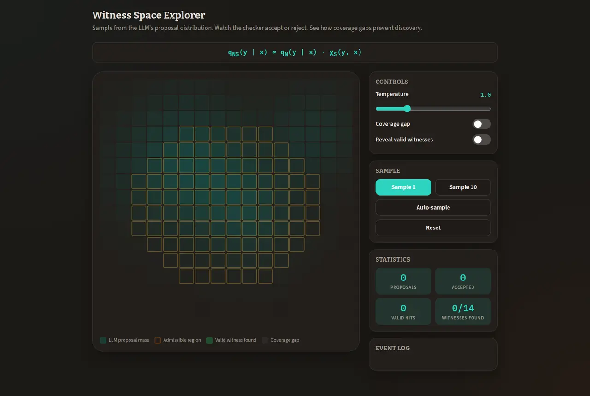

Humanity+
Member of the futurist network formerly known as the World Transhumanist Association, founded by Nick Bostrom and David Pearce.
Formal methods · AI assurance · verification-gated engineering
Engineer, philosopher, and futurist. Since 2012 I've been working on one question: how do you use computation to reduce involuntary ignorance and improve the quality of governance? The answer evolved from intelligence augmentation through network states to proof-carrying systems.
I make correctness checkable and AI action governable. Where it matters most, whole classes of failure are ruled out by proof, not just tested for and hoped against.
What I add
Public artifacts, runnable commands, machine-checked proofs, and stated limitations. Open it, run it, or try to break it.
Machine-checked Lean proofs and TLA⁺ models that re-verify on any machine. Whole failure classes become unreachable, not just untested, so the bugs that cost the most never ship.
Agent governance where the model proposes and deterministic gates decide. Automation that cannot act without a valid, verified receipt, and fails closed when one is missing.
Formal proofs, Rust systems, zero-knowledge, and protocol design from one engineer. Every claim ships with a command that reproduces it.
Lean repositories on GitHub are about 0.037% of Python repositories, and TLA⁺ about 0.0046% (checked June 17, 2026; see the rarity table). The combination with shipped Rust systems and ZK is rarer still, and every claim on this site is reproducible.
| Capability | Evidence |
|---|---|
| Technical taste | Small trusted core, explicit interfaces, bounded claims. |
| Formal methods | Lean, TLA+, and SMT artifacts with theorem statements and replay commands. |
| AI-era discipline | AI is an untrusted proposer; deterministic gates decide. |
| Security mindset | Threat model, fail-closed behavior, replay and tamper tests. |
| Communication | Case studies, claim tables, limitations, and technical essays. |
Background
The same question runs through all of it: how do you use computation to reduce involuntary ignorance and improve the quality of governance? The arc starts in intelligence augmentation, moves through network states and autonomous agents, and arrives at proof-carrying systems where rules are enforced by construction, not by trust.
In 2015, I argued that cognitive bias, bounded rationality, and information asymmetry cause involuntary errors in human decision-making — and that intelligence augmentation could mediate them. In 2017, the Pangea whitepaper introduced Lucy — an autonomous agent designed to evolve into an exocortex. The thread from there to MPRD is direct: a model proposes, deterministic gates decide. The rules are the constitution, and the proof is the check.
The exocortex concept evolved from Ray Kurzweil's work on brain augmentation. I took that idea and built on it: a wisdom engine — a search engine, but for decision support. The problem it was designed to solve was involuntary ignorance. For democracy to produce better governance, you need a wiser, more informed voter, a wiser lawmaker, and smarter institutions. Lucy was a prototype for what we now see with modern AI assistants — but its role was to empower each network citizen, not unlike what Sam Altman later described as "building a brain for the world" that is "extremely personalized and easy for everyone to use."
Sam Altman, "The Gentle Singularity" — the parallel to Lucy, seven years later.
Two works shaped my thinking on technological unemployment and intelligence augmentation. I. J. Good's 1965 paper on the intelligence explosion — the idea that an ultraintelligent machine could design better machines, leaving human intelligence far behind — framed the stakes. James Albus's Path to a Better World showed that automation need not produce mass poverty if the economic surplus is distributed intelligently.
"Let an ultraintelligent machine be defined as a machine that can far surpass all the intellectual activities of any man however clever. Since the design of such machines is one of these intellectual activities, an ultraintelligent machine could design even better machines; there would then unquestionably be an 'intelligence explosion,' and the intelligence of man would be left far behind. Thus the first ultraintelligent machine is the last invention that man need ever make."
I. J. Good, Speculations Concerning the First Ultraintelligent Machine (1965)
From Albus and Good, I developed two ideas over a decade ago to address technological unemployment: a Citizen's Income and a Citizen's Dividend — the latter modeled on the Alaska Permanent Fund, which distributes oil revenue directly to residents. These were philosopher-level discussions in 2013; they are mainstream political discourse now. The thread from there to MPRD is the same: if automation changes who can act, governance must change how action is constrained.
Member of the futurist network formerly known as the World Transhumanist Association, founded by Nick Bostrom and David Pearce.
Helped design the network state with founder Susanne Tarkowski Tempelhof. The project was covered by The Atlantic, The Economist, and the Wall Street Journal, and awarded a UNESCO/Netexplo Grand Prix in 2017.
Co-authored essay with Alexander J. Karran, published on Transpolitica. Argues that cognitive bias, bounded rationality, and information asymmetry cause involuntary errors in human decision-making — and that intelligence augmentation can mediate them. The motivation that runs through everything after. Read it.
Co-authored the Pangea whitepaper with Susanne Tarkowski Tempelhof and others. Credited in footnotes for developing the reputation distribution mechanism and initial thinking on Nomic Law integration. Section 2.3 introduced Lucy — an autonomous agent designed to evolve into an exocortex, an external cognitive augmentation system. Seven years before the AI agent boom.
The Lucy concept from the 2017 whitepaper, evolved into a full AI governance operating system. Co-authored book with Susanne Tarkowski Tempelhof. Available on Amazon.
Proof-carrying AI action governance, formally verified exchange, and 61 tutorials on what it means to justify a claim about software.
Selected work
Each card links to the proofs, specs, and public repo behind it. The screenshots show real UI; the repos hold the runnable code and the machine-checked evidence. In the targeted classes, bugs are not just tested for. They are ruled out. The same core of proofs, gates, and reproducible evidence maps onto several roles where teams cannot afford to be wrong.
Proof-carrying AI action governance. An untrusted model proposes candidate actions; deterministic policy and verification gates decide whether a committed action may reach an executor.
Why it matters: a working blueprint for letting AI agents act without acting unsafely. It uses a typed execution boundary, Lean-backed proof surfaces, and receipts the executor must verify before anything runs.
A formally constrained DEX/tokenomics stack organized around functional cores, replayable certificates, Lean proof artifacts, disaster-state witnesses, and public assurance replay.
Why it matters: integer-exact settlement, TLA⁺ models, and replayable certificates rule out the bug classes behind nine-figure DeFi losses, among them rounding, reentrancy, and broken invariants. Build-cost economics and market comparables sit on the value page.

A tutorial and lab site on modeling, abstraction, symbolic tools, counterexamples, verification, and what it means to justify a claim about software.
Why it matters: 61 tutorials and 12 interactive labs that teach the verification methods above. Evidence that I can explain the work clearly, not just do it.
Writing
What does it mean to justify a claim about software? Each tutorial starts with a concrete picture, then tightens into a model tools can manipulate. The labs turn abstract claims into something visible.
State machines, abstraction, counterexamples, CEGIS, and the boundary between heuristics and proofs.
The neuro-symbolic gate turned into production architecture. Models propose, rules decide.
Proof in a closed formal world vs corroboration in an open empirical one.
If consciousness is a nontrivial semantic property, no general detector can decide it.
Contact
This site is my living CV: always current, evidence-linked, and more specific than a PDF. Email me directly, or start from the quantitative value case, the evaluation page, and GitHub.